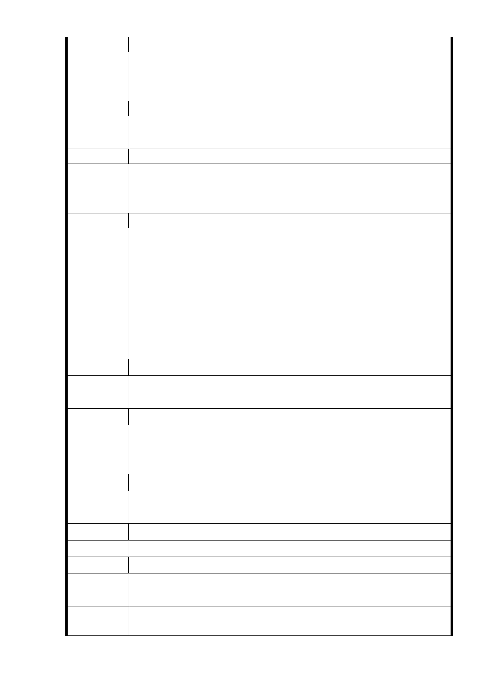

發 言 人 市民十七
一、請清除荒廢平宅。
建 議 辦 法 二、公園常有老人活動，如有遊覽車出入將影響安全。
三、市府能否妥善管理出租住宅。
發 言 人 市民十八
建 議 辦 法 一、建議廣慈全部設置為公園，如設置福利設施亦為一小部分為
宜。
發 言 人 市民十九
一、本案應重新思考討論，並與在地人溝通。
建 議 辦 法 二、應進行環評，另拆除部分宜開放短期作公園、籃球場等供居
民運動。
發 言 人 市民二十
一、平宅宜進行拆除。
二、平宅未必要以低收入者居住為主，本地區應轉換為不一樣的
社福設施。
建 議 辦 法 三、設置遊覽車停車場將對信義路六段及本地區之交通造成衝擊
，應予避免。
四、本案應避免過度設置商業區。
五、本案不應僅從財務進行考量，應著重本地區未來的永續發展
為優先。
發 言 人 市民二十一
建 議 辦 法 一、本案原為機關用地，為何現在可以作商業用？
二、應把周邊住宅區變更為商業區，以加速開發。
發 言 人 市民二十二
一、建議重新進行分區規劃。
建 議 辦 法 二、於地震帶蓋高樓對當地居民影響大。
三、請提供評估報告及停車場分析報告。
發 言 人 市民二十三
建 議 辦 法 一、請將評估報告刊登於都發局網站，並定期召開會議溝通。
二、應將計畫、步驟等資訊公開予民眾了解。
發 言 人 市民二十四
建 議 辦 法 一、建議興建高層建築。
發 言 人 市民二十五
建 議 辦 法 一、本案不應持續延宕，應加速規劃、興建，並將捷運延伸至本
地。
市 府 回 應 同編號1、2、28回復內容
意見
- 74 -